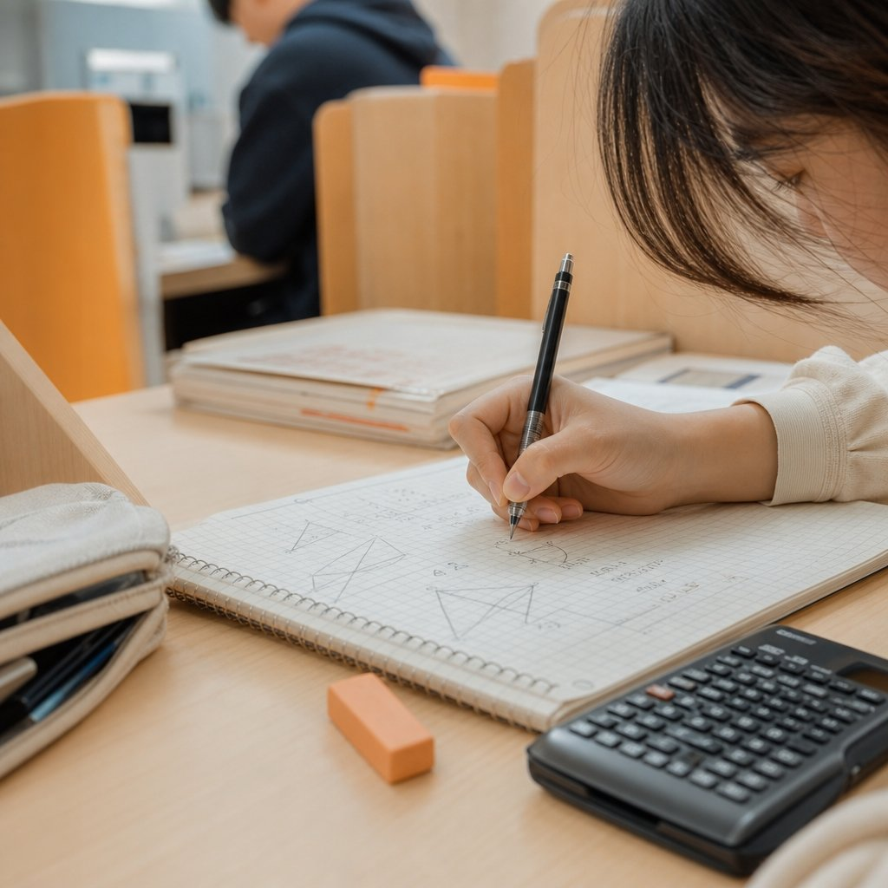

- 계남초에서 신중동점까지의 효율적인 방과 후 동선 설계
- 초등 수학의 핵심은 연산이 아닌 개념의 내면화
- 학습 플래너로 만드는 수학 공부의 자기주도적 습관
- 계남초 수학 시험과 내신 대비의 올바른 전략
- 집에서 실천하는 수학 사고력 확장법
- 와와학습코칭센터 신중동점과 함께하는 수학의 완성
- 우리 아이에게 맞는지는 무료 상담으로 먼저 확인해보실 수 있어요.
부천시 원미구 중동, 현대백화점 인근의 복잡한 상권과 아파트 단지 사이를 가로지르는 통학로 위에는 언제나 계남초등학교 아이들의 활기찬 웃음소리가 가득합니다. 이 지역은 학구열이 높기로 유명한 부천의 핵심 교육 구역으로, 주변에 심원초, 부곡초를 비롯해 중·고등학교까지 밀집되어 있어 교육 인프라가 매우 촘촘하게 짜여 있습니다. 특히 계남초는 주변 대단지 아파트와의 접근성이 좋아 매일 등하교하는 아이들의 동선이 매우 안전하고 체계적으로 형성되어 있으며, 방과 후에는 인근 학원가로 이동하는 아이들의 발걸음이 끊이지 않는 곳이기도 합니다.
많은 학부모님이 계남초 수학 교육의 방향성을 고민할 때, 단순히 진도를 빨리 나가는 선행 학습만을 떠올리는 경우가 많습니다. 하지만 초등 시기는 수학이라는 학문에 대한 '태도'를 형성하는 결정적인 골든타임입니다. 단순히 계산 실력을 키우는 것을 넘어, 왜 이런 공식이 나왔는지 원리를 고민하고, 스스로 문제를 해결해 나가는 과정을 즐길 수 있도록 돕는 것이 중요합니다. 특히 중동 지역의 학업 분위기를 고려할 때, 기초부터 탄탄하게 쌓아 올린 수학적 사고력은 중학교 진학 후 급격히 어려워지는 수학 학습을 버티게 하는 가장 강력한 무기가 됩니다.
본 글에서는 계남초등학교 아이들이 수학을 즐겁게, 그리고 완벽하게 소화할 수 있는 실질적인 학습법과 함께, 인근 와와학습코칭센터 신중동점에서 어떻게 아이들의 학습 습관을 체계적으로 관리하고 있는지 상세히 살펴보겠습니다. 막연한 불안감을 해소하고, 아이의 현재 수준에서 가장 효율적인 성장을 이끌어낼 수 있는 구체적인 로드맵을 그려보시길 바랍니다.
계남초에서 신중동점까지의 효율적인 방과 후 동선 설계
계남초등학교에서 하교한 아이들은 방과 후 시간을 어떻게 활용하느냐에 따라 그날의 학습 효율이 크게 달라집니다. 학교 정문을 나와 학원가 밀집 지역으로 이동하는 경로는 아이들의 안전과 직결되기에 많은 학부모님이 동선을 꼼꼼하게 체크하시곤 합니다. 조마루로를 따라 신중동 방향으로 이동하는 길은 보행 환경이 비교적 잘 조성되어 있어 아이들이 혼자서도 안전하게 이동하기에 무리가 없습니다. 특히 센터프라자 인근은 여러 교육 시설과 편의 시설이 모여 있어, 하교 후 곧바로 학습 공간으로 이동하여 흐름을 끊지 않고 공부를 시작하기에 최적의 환경을 제공합니다.
초등 고학년으로 갈수록 숙제와 방과 후 수업, 외부 활동이 겹치며 시간이 부족해지기 쉽습니다. 이때 가장 중요한 것은 학교에서 배운 내용을 바로 복습할 수 있는 장소를 확보하는 것입니다. 계남초에서 신중동점까지는 도보로 이동 가능한 거리이기에, 방과 후 곧바로 센터로 향해 하루 동안 학교에서 배운 수학 개념을 정리하는 시간을 갖는 것이 좋습니다. 이동 시간은 곧 생각하는 시간입니다. 학교에서 이해가 되지 않았던 부분이나, 친구들과의 대화에서 나왔던 수학적 호기심을 정리하며 이동하는 습관은 아이의 사고력을 길러주는 작은 실천이 됩니다.
또한, 초등학생의 경우 학교 수업이 끝난 직후의 집중력이 가장 높습니다. 학부모님께서는 아이가 하교 후 집에 들러 시간을 허비하기보다는, 일정한 루틴에 맞춰 학습 공간으로 이동하는 습관을 들이도록 지도해 주시는 것이 좋습니다. 신중동점은 이러한 아이들의 방과 후 동선을 고려하여, 안전한 학습 환경을 조성하고 아이들이 센터에 도착하자마자 차분하게 오늘 학습할 내용을 점검할 수 있도록 돕고 있습니다. 효율적인 동선 관리야말로 초등 학습 성공의 첫걸음임을 잊지 마시기 바랍니다.
초등 수학의 핵심은 연산이 아닌 개념의 내면화
많은 학부모님이 계남초 수학 공부를 시작할 때 가장 먼저 고민하시는 것이 '연산 학습'입니다. 물론 정확하고 빠른 연산은 수학의 기초 체력이지만, 그것이 곧 수학 실력의 전부는 아닙니다. 초등 과정에서 배우는 분수의 덧셈, 소수의 나눗셈, 도형의 넓이 구하기 등은 모두 개념의 원리를 이해하지 못하면 중학교 수학에서 큰 벽을 만나게 됩니다. 단순히 문제집을 많이 푸는 방식은 단기적인 성적에는 도움이 될지 몰라도, 아이가 어려운 응용 문제를 마주했을 때 스스로 해결할 힘을 기르는 데는 한계가 있습니다.
개념을 내면화한다는 것은 교과서에 나오는 정의를 단순히 외우는 것이 아니라, 그것을 자신의 언어로 설명할 수 있는 상태를 의미합니다. 예를 들어, 나눗셈을 배울 때 단순히 '나누기' 기호를 쓰는 법을 익히는 것이 아니라, 전체를 똑같이 묶어보는 경험을 통해 나눗셈의 의미를 파악하는 것이 중요합니다. 계남초 수학 교육과정 역시 이러한 단계적 성장을 중요시하므로, 아이가 개념을 한 번 공부할 때 제대로 이해하고 넘어가는 습관을 들이는 것이 좋습니다. 가정에서는 아이에게 오늘 배운 수학 개념을 부모님께 짧게 설명해 보라고 권유해 보세요. 부모님께 설명하는 과정에서 아이는 자신이 무엇을 알고 무엇을 모르는지 스스로 깨닫게 됩니다.
와와학습코칭센터에서는 이러한 개념 내면화를 돕기 위해 무학년 수업 방식을 취하고 있습니다. 무학년 수업은 학년 구분 없이 아이의 현재 실력을 기준으로 부족한 부분을 정확히 메워나가는 방식입니다. 무조건 높은 학년의 내용을 선행하는 것이 아니라, 현 단계의 개념이 부족하다면 이전 학년의 내용이라도 확실하게 다지고 올라가는 것이 수학의 계통성을 유지하는 비결입니다. 수학은 이전 단계의 지식이 다음 단계의 지식을 쌓기 위한 토대가 되는 학문이기에, 기초가 흔들리면 모래 위에 성을 쌓는 것과 다름없습니다. 개념의 확실한 이해가 선행될 때, 수학에 대한 자신감은 자연스럽게 따라옵니다.
학습 플래너로 만드는 수학 공부의 자기주도적 습관
공부 습관은 초등 시기에 잡히지 않으면 중·고등학생이 되어서도 고치기 어렵습니다. 특히 수학은 매일 꾸준히 해야 하는 과목이라는 인식이 강한데, 이를 실행에 옮기는 것은 아이들에게 매우 어려운 숙제입니다. 이때 가장 효과적인 도구가 바로 '학습 플래너'입니다. 와와학습코칭센터의 교육 철학에서 플래너는 단순한 기록장을 넘어, 아이가 스스로 자신의 학습 상태를 점검하고 계획을 세우는 핵심 도구로 활용됩니다. 매일 자신이 할 분량을 스스로 정하고, 이를 실천했는지 확인하는 과정에서 아이는 자신의 학습 속도를 파악하게 됩니다.
학습 플래너의 가장 큰 장점은 시각화입니다. 오늘 수학 공부를 얼마나 했는지, 어떤 문제에서 막혔는지, 오답은 왜 발생했는지 등을 기록하다 보면 아이의 학습 패턴이 눈에 보입니다. 부모님은 아이가 플래너를 작성할 때 옆에서 간섭하기보다는, 스스로 계획한 분량을 다 채웠을 때 그 성취감을 느낄 수 있도록 지지해 주셔야 합니다. 계남초 학생들은 학교 과제와 학원 숙제 등으로 바쁜 일정을 보내는 경우가 많습니다. 이때 플래너를 통해 '해야 할 공부'와 '하고 싶은 활동'의 균형을 맞추는 법을 배우면 학습의 효율이 극대화됩니다.
특히 수학 공부에서 플래너를 활용할 때는 '오답 분석' 칸을 따로 마련하는 것이 좋습니다. 단순히 문제를 많이 푼 것이 중요한 것이 아니라, 하루에 딱 5문제라도 제대로 이해하고 넘어갔는지 기록하는 것이 중요합니다. 매일 공부 습관을 기록하고 관리하는 과정이 쌓이면, 아이는 학습의 주도권을 자신이 쥐고 있다는 자신감을 갖게 됩니다. 센터에서는 학습 플래너를 통해 아이의 하루 공부량을 세밀하게 점검하고, 무리한 계획보다는 실천 가능한 계획을 세울 수 있도록 코칭합니다. 이렇게 습관이 형성된 아이들은 중학교에 진학해서도 스스로 학습 계획을 수립하고 실천하는 자기주도적 학생으로 성장하게 됩니다.
가까운 센터 상담으로 먼저 확인해보세요.무료 상담 신청하기 →
계남초 수학 시험과 내신 대비의 올바른 전략
초등학교 시험은 중·고등학교처럼 등급을 나누기 위한 과정이라기보다, 아이가 그동안 배운 내용을 얼마나 자기 것으로 만들었는지 확인하는 점검 과정입니다. 계남초를 비롯한 일반적인 초등학교의 경우, 교과서와 학교에서 배부하는 프린트, 그리고 수학 익힘책을 중심으로 평가가 이루어집니다. 따라서 시험 기간이 다가왔다고 해서 갑자기 어려운 시중 문제집을 사서 풀리는 것은 큰 도움이 되지 않습니다. 오히려 교과서 개념을 다시 한번 복습하고, 학교 선생님이 강조했던 포인트가 무엇인지 파악하는 것이 가장 효과적인 내신 대비법입니다.
학교 시험은 '역산' 전략으로 대비해야 합니다. 시험 날짜를 기준으로 최소 4주 전부터 계획을 세워야 합니다. 첫 주는 전체적인 개념 정리, 둘째 주와 셋째 주는 다양한 유형의 문제 풀이와 오답 점검, 마지막 주는 실전 모의고사와 최종 리허설을 진행하는 방식입니다. 시험 4주 전부터 차근차근 준비하면 아이의 시험 불안도 줄어들고, 무엇보다 평소에 다져놓은 실력을 온전히 발휘할 수 있습니다. 시험 직전에는 학교 교과서에 나오는 문장제 문제를 다시 한번 읽어보며, 문제 해결의 과정을 논리적으로 적는 연습을 해보는 것이 좋습니다.
또한, 초등 수학 시험에서는 실수를 줄이는 것이 관건입니다. 문제를 끝까지 읽지 않거나, 계산 실수로 틀리는 경우가 빈번합니다. 이를 방지하기 위해서는 문제를 풀 때 풀이 과정을 꼼꼼하게 적는 습관을 들여야 합니다. 시험지 여백에 풀이 과정을 정갈하게 적는 아이는 실수가 적을 수밖에 없습니다. 센터에서는 아이들이 시험 기간이 다가오면 학교별 내신 대비 체제로 전환하여, 교과서와 부교재를 철저히 분석합니다. 시험은 아이에게 부담이 아니라, 내가 무엇을 알고 무엇을 모르는지 확인하는 즐거운 도전이 되어야 합니다.
집에서 실천하는 수학 사고력 확장법
가정은 아이의 수학적 호기심이 가장 먼저 발현되는 공간입니다. 학교와 학원에서의 공부가 정형화된 수학이라면, 집에서는 일상생활 속에서 수학적 사고를 확장하는 놀이 같은 학습이 필요합니다. 예를 들어, 시장에 가서 물건의 가격을 계산해 보거나, 요리를 할 때 계량컵을 사용하여 분수의 개념을 익히는 것은 매우 훌륭한 수학 공부가 됩니다. 아이가 수학을 '공부'로만 느끼지 않고, 세상을 이해하는 '도구'로 느낄 수 있도록 해주세요.
또한, 집에서는 아이가 '왜?'라는 질문을 던질 수 있도록 유도해 주시는 것이 좋습니다. "이 문제는 왜 이렇게 풀어야 할까?", "다른 방법으로 풀 수는 없을까?" 같은 질문은 아이의 사고를 확장하는 데 큰 역할을 합니다. 정답만 맞히는 것이 능사가 아니라, 다양한 풀이법을 고민해 보는 것 자체가 수학적 사고력을 키우는 핵심입니다. 부모님이 직접 가르치려 하기보다는, 아이가 스스로 답을 찾아가는 과정을 기다려 주는 인내심이 필요합니다. 아이가 자신의 생각을 논리적으로 말로 설명할 때, 부모님은 그 과정에 대해 충분히 칭찬해 주세요.
마지막으로, 수학 도서를 활용하는 것도 좋은 방법입니다. 수학의 역사나 재미있는 수의 이야기를 다룬 책들은 아이가 수학이라는 학문에 친근감을 느끼게 합니다. 너무 어려운 난이도보다는 아이의 흥미를 자극할 수 있는 수준의 책을 선정하여 주말에 함께 읽어보는 시간을 가져보세요. 수학은 억지로 시키는 것이 아니라 스스로 즐거움을 발견할 때 가장 큰 성장이 일어납니다. 가정에서의 작은 관심과 격려가 아이를 수학에 자신감 있는 학생으로 변화시키는 밑거름이 될 것입니다.
와와학습코칭센터 신중동점과 함께하는 수학의 완성
계남초 수학 학습에 있어 가장 중요한 것은 아이의 수준에 딱 맞는 환경을 찾아주는 것입니다. 와와학습코칭센터 신중동점은 2015년 시작되어 전국적으로 검증된 학습 시스템을 바탕으로, 부천 지역 아이들의 성장을 돕고 있습니다. 2025 소비자가 뽑은 올해의 브랜드 대상을 수상한 와와학습코칭센터는 단순히 지식을 전달하는 것을 넘어, 아이 스스로 공부하는 힘을 길러주는 데 집중합니다. 본 센터는 부천교육지원청에 정식 등록된 교육기관으로, 최혜민 원장이 운영하며 아이들에게 올바른 학습 습관을 심어주기 위해 정성을 다하고 있습니다.
저희 센터는 특히 '플래너 학습관리'를 통해 아이들이 공부의 주도권을 되찾을 수 있도록 돕습니다. 매일 기록하고 성찰하는 플래너는 아이들이 자신의 성장을 눈으로 직접 확인하게 하며, 꾸준한 습관이 결국 큰 성취로 이어진다는 것을 깨닫게 합니다. 또한, 상담을 통해 아이의 현재 학습 상태를 정확히 진단하고, 1:1 맞춤형 코칭을 제공합니다. 학습에 어려움을 겪거나, 더 높은 단계로 도약하고 싶은 학생이라면 언제든 상담을 통해 구체적인 로드맵을 확인해 보시길 바랍니다.
우리 아이의 수학 공부, 더 이상 고민만 하지 마시고 전문가와 함께 시작해 보세요. 와와학습코칭센터 신중동점은 언제나 열려 있습니다. 학습에 대한 체계적인 진단과 상담은 무료로 제공되오니, 부담 없이 방문하여 아이에게 맞는 최적의 학습 솔루션을 찾아가시길 바랍니다. 교습비와 상세한 운영 방식은 센터 방문 상담 시 친절하게 안내해 드리겠습니다. 경기도 부천시 원미구 조마루로291번길 25 센터프라자 405·406호에서 우리 아이의 밝은 미래를 함께 설계하겠습니다. 지금 바로 무료 학습상담을 신청해 보세요.
자주 묻는 질문
수학을 너무 싫어하는 아이인데, 어떻게 시작하면 좋을까요?
수학을 싫어하는 아이들은 대개 기초 개념에서 구멍이 났을 때 좌절감을 느끼는 경우가 많습니다. 무조건 진도를 나가기보다는 아이가 자신감을 가질 수 있는 쉬운 단계부터 다시 시작해야 합니다. 저희 센터에서는 아이의 현재 수준을 정밀하게 진단하여, 아이가 충분히 이해하고 즐거움을 느낄 수 있는 지점부터 맞춤형 수업을 진행합니다.
학원 숙제가 너무 많아 학교 공부할 시간이 부족합니다.
과도한 숙제는 오히려 학습 효율을 떨어뜨립니다. 중요한 것은 양보다 질입니다. 플래너를 활용하여 아이가 하루에 소화할 수 있는 적정한 분량을 계획하고, 학교 수업의 흐름을 방해하지 않는 선에서 학습량을 조절해야 합니다. 센터에서는 아이의 일상 전체를 고려한 균형 잡힌 학습 계획을 세워, 학교 공부와 심화 학습을 병행할 수 있도록 지도합니다.
상담은 어떤 방식으로 진행되나요?
상담은 아이의 현재 학습 습관, 교과 이해도, 성향 등을 종합적으로 파악하는 과정부터 시작합니다. 보호자와 아이가 함께 방문하여 학습 진단을 받고, 현재 가장 시급한 보완점이 무엇인지 확인합니다. 이후 아이의 수준과 목표에 맞는 최적의 관리 방식을 제안해 드립니다. 상담과 학습 진단은 무료로 진행되니 편하게 예약 후 방문해 주시기 바랍니다.
📍 신중동점 한눈에 보기
| 지점 | 와와학습코칭센터 신중동점 |
|---|---|
| 주소 | 경기 부천시 원미구 조마루로291번길 25 센터프라자 405·406호 |
| 담당 학교 | 부곡초, 계남초, 심원초, 심곡초, 부천중앙초, 심원중, 계남중, 부곡중, 부천중, 계남고, 심원고, 원미고 |
| 운영 과목·학년 | 국어 초3~고1 · 영어 초3~고2 · 수학 초3~고2 |
| 수업 시간 | 평일 오후 3시 30분 이후 / 주말: 주말불가 |
| 등록 | 부천교육지원청 등록 제6330호 · 최혜민 원장 |
운영 과목·시간은 센터 사정에 따라 바뀔 수 있어 상담 시 확인해 드립니다. 센터 찾기에서 보기 · 이 센터 상담 신청